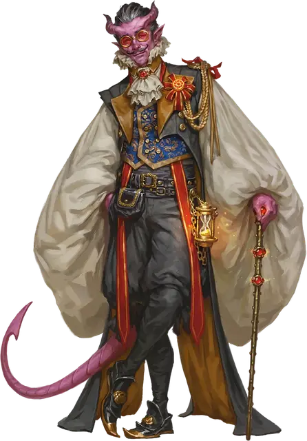

Обречённый сотрясатель
Fated Shaker
Маленький или Средний Гуманоид

Класс Доспеха 13 (16 с доспехом мага)
Хиты 76 (17к8)
Скорость 30 футов
| мод | спас | ||
|---|---|---|---|
| СИЛ | 10 | +0 | +0 |
| ЛОВ | 16 | +3 | +3 |
| ТЕЛ | 10 | +0 | +0 |
| мод | спас | ||
|---|---|---|---|
| ИНТ | 15 | +2 | +5 |
| МДР | 16 | +3 | +6 |
| ХАР | 15 | +2 | +2 |
Навыки Восприятие +6, Проницательность +6, Расследование +5
Чувства пассивное Восприятие 16
Языки Общий плюс два языка
Опасность 5 (1800 опыта)
Бонус мастерства +3
Действия
Мультиатака. Сотрясатель совершает две атаки Золотым жезлом или Сияющим снарядом.
Золотой жезл. . Рукопашная атака оружием: +6 к попаданию, досягаемость 5 футов, одна цель. Попадание: 6 (1к6 + 3) дробящего урона плюс 9 (2к8) урона излучением.
Сияющий снаряд. . Дальнобойная атака заклинанием: +6 к попаданию, дистанция 120 футов, одна цель. Попадание: 14 (2к10 + 3) урона излучением
Использование заклинаний. Сотрясатель накладывает одно из следующих заклинаний, не нуждаясь в материальных компонентах, используя Мудрость в качестве базовой характеристики (Сл спасброска заклинания 14):
• Неограниченно: доспехи мага [mage armor], волшебная рука [mage hand]
• 1/день каждое: увеличение/уменьшение [enlarge/reduce], полёт [fly], внушение [suggestion]
Бонусные действия
Командные слова. Сотрясатель произносит магические слова, приказывая существу, которое он может видеть в пределах 30 футов. Цель должна преуспеть в спасброске Мудрости Сл 14, иначе будет подвергнуто воздействию одного из следующих эффектов (выберите один или бросьте к4):
• 1-2: Пресмыкайся. Цель получает 14 (4к6) урона психической энергией, роняет все, что держит, и падает ничком.
• 3-4: Трепещи. Цель получает 10 (3к6) урона психической энергией и становится испуганным до конца своего следующего хода.
Описание
Обреченные сотрясатели - это бандиты, вытряхивающие деньги из тех, кто задолжал сборщикам налогов фракции и изгнанникам. Эти силовики используют свою магию, чтобы запугать и подчинить себе тех, кто пытается им противостоять.